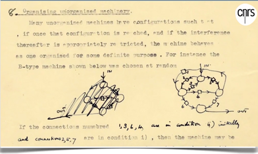
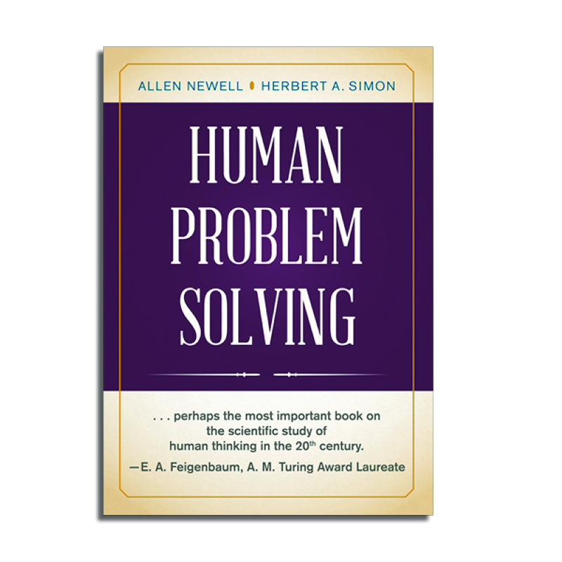
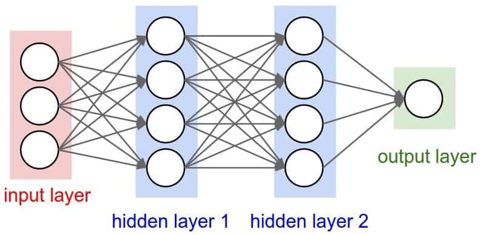
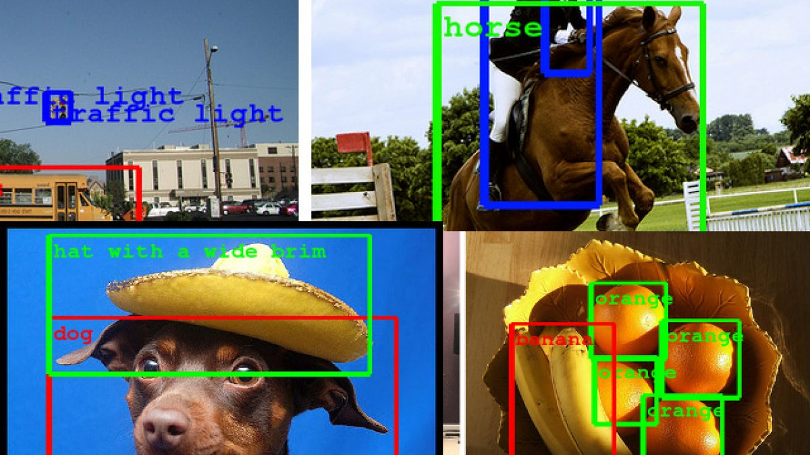
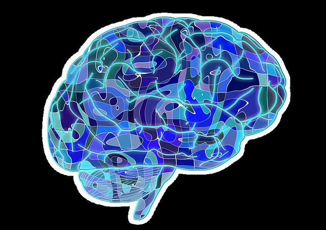
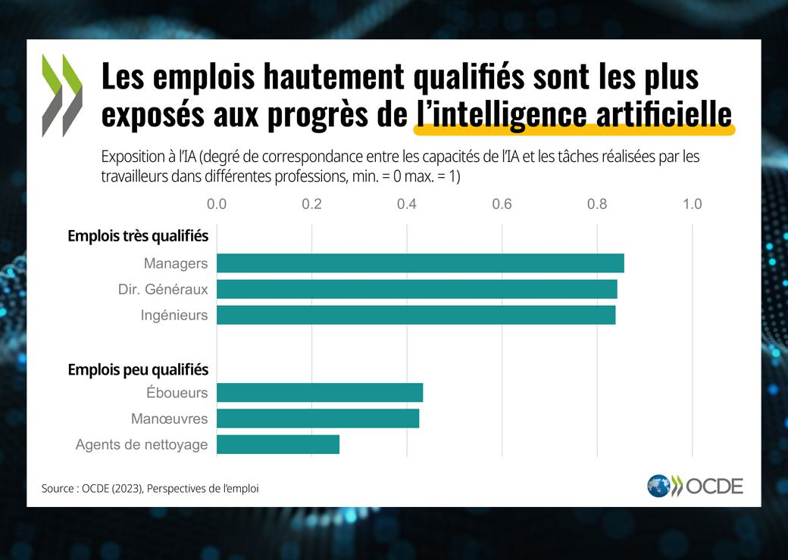

Histoire de l'intelligence artificielle |
L'intelligence artificielle (IA) est un domaine de l'informatique qui vise à créer des machines capables d'imiter l'intelligence humaine.
Les origines de l'IA remontent aux années 1950, lorsque les premiers programmes informatiques capables de résoudre des problèmes complexes ont été développés.
Depuis lors, l'IA a connu un développement rapide, et de nombreuses applications ont été développées, notamment dans les domaines de la robotique, de la reconnaissance de la parole et de la vision artificielle.
| Période | Date | Événement | Illustration |
|---|---|---|---|
| Pionnier | 1950 | Alan Turing publie un article fondateur sur l'IA, intitulé "Computing Machinery and Intelligence". |  |
| Première conférence | 1957 | John McCarthy organise la première conférence sur l'IA, à Dartmouth College. | |
| Reconnaissance des formes | 1965 | Marvin Minsky et Seymour Papert publient le livre "Perceptrons", qui lance le domaine de la reconnaissance des formes. | |
| IA symbolique | 1973 | Herbert Simon et Allen Newell publient le livre "Human Problem Solving", qui définit les principes de l'IA symbolique. |  |
| Réseaux de neurones artificiels | 1980 | John Hopfield et David Rumelhart publient des articles fondateurs sur les réseaux de neurones artificiels. |  |
| Reconnaissance d'images | 1990 | Yann LeCun et Yoshua Bengio publient des articles fondateurs sur la reconnaissance d'images. |  |
| Systèmes d'IA dans les jeux de stratégie | 2000 | Les premiers systèmes d'IA capables de battre des humains à des jeux de stratégie sont développés. | |
| Renouveau des réseaux de neurones artificiels | 2010 | Les réseaux de neurones artificiels connaissent un renouveau, grâce à l'augmentation de la puissance de calcul et des données disponibles. |  |
| Progrès rapides de l'IA | 2020 | Les progrès de l'IA sont rapides, et de nombreuses applications sont désormais disponibles dans la vie quotidienne. |  |